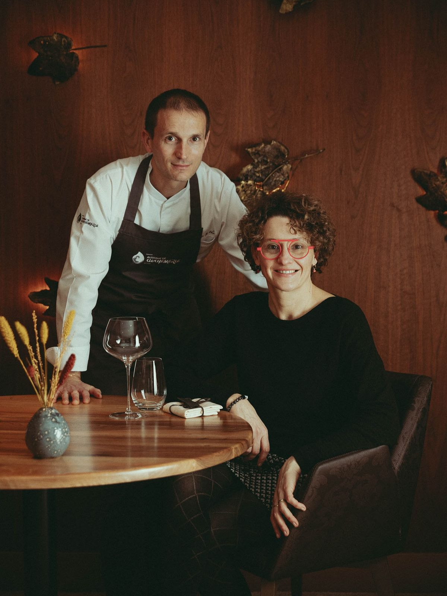

"Une expérience gustative parfaite, nos convives étaient enchantés du début à la fin."

A Propos de nous
Julie & José, passionnés de gastronomie depuis plus de 25 ans, créent des expériences culinaires uniques pour vos événements.
Nous mettons notre savoir-faire au service de vos réceptions pour des moments inoubliables. Chaque menu est élaboré avec des produits frais et locaux, sélectionnés avec soin. Nous mettons notre savoir-faire au service de vos réceptions pour des moments inoubliables. Chaque menu est élaboré avec des produits frais et locaux, sélectionnés avec soin. De l’élégance d’un cocktail dînatoire à la générosité d’un repas assis, nous adaptons chaque prestation à vos envies et à votre budget. Notre cuisine allie créativité, authenticité et raffinement afin de surprendre et séduire vos convives. Nous accordons une attention particulière à la présentation pour sublimer chaque plat et éveiller tous les sens. À l’écoute de vos besoins, nous vous accompagnons de la conception du menu jusqu’au service le jour J. Notre objectif : transformer chaque événement en une véritable signature gustative, à votre image.
Avis Clients
"Le menu était divin, chaque plat était un régal. Nous referons appel à Vite & Gourmand pour nos prochains événements."
"Prestations exceptionnelles, cuisine raffinée et service impeccable. Nos invités étaient ravis !"